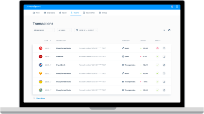
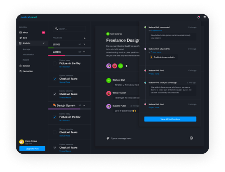

Contents
We focus on ergonomics and meeting you where you work. It's only a keystroke away.Work
Ever wondered if you're too reliant on a client for work? Slate helps you identify.
Desing with real data
Ever wondered if you're too reliant on a client for work? Slate helps you identify.
